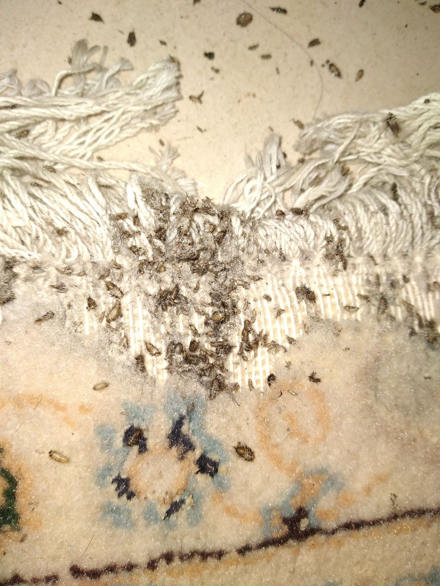
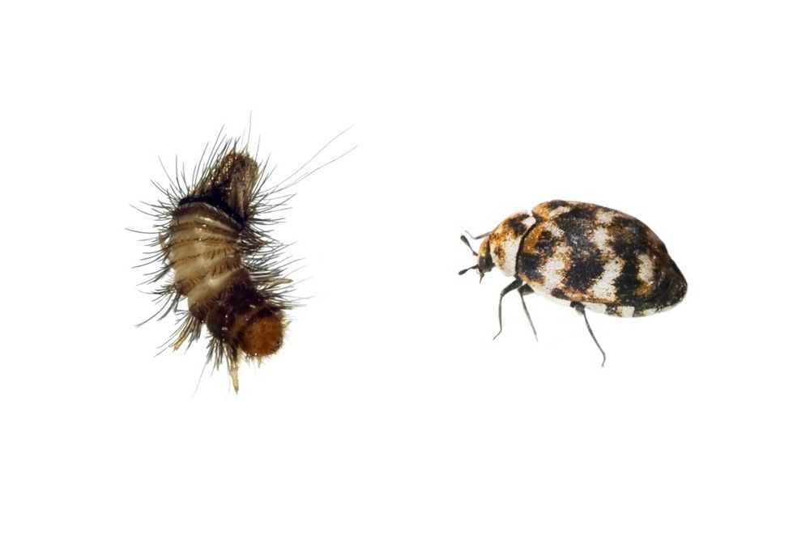

راهنمای جامع و تخصصی سمپاشی بید فرش | از تشخیص تا ریشهکنی قطعی
📅 آخرین بهروزرسانی: ۲۸ مرداد ۱۴۰۴ | ⏱ زمان مطالعه: ۱۵ دقیقه

تصویر بید فرش - یکی از مخربترین آفات منسوجات طبیعی در منازل و موزهها
مقدمه: تهدید خاموش برای ارزشمندترین داراییهای شما
آیا تا به حال سوراخهای ریز و نامنظمی را روی فرش دستبافت یا مبلمان گرانقیمت خود مشاهده کردهاید که بدون هیچ دلیل مشخصی ظاهر شدهاند؟ آیا هنگام جارو کشیدن، تکههای ریزی از الیاف فرش روی زمین ریختهاید و از خود پرسیدهاید که این آسیبها از کجا آمدهاند؟ اگر پاسخ شما مثبت است، احتمالاً خانه شما میزبان ناخواندهای به نام بید فرش شده است؛ آفتی کوچک اما فوقالعاده مخرب که میتواند در سکوت کامل، ارزشمندترین فرشها و منسوجات شما را به تودهای بیاستفاده از الیاف خرد شده تبدیل کند.
بید فرش که در زبان علمی با نام Tineola bisselliella شناخته میشود، یکی از جدیترین تهدیدات برای فرشهای پشمی، ابریشمی و سایر منسوجات طبیعی محسوب میشود. این حشره کوچک با تغذیه از کراتین موجود در الیاف طبیعی، به تدریج و بدون آنکه متوجه شوید، بافت فرش را از درون تخریب میکند. آنچه این آفت را به ویژه خطرناک میسازد، سرعت تکثیر بالا و توانایی آن در پنهان شدن در عمیقترین لایههای بافت فرش است.
در این مقاله جامع از شرکت سمپاشی نانوفناوران بهداشت تهران، شما را با تمام جنبههای مربوط به بید فرش آشنا خواهیم کرد؛ از شناسایی دقیق این آفت و تشخیص علائم آلودگی گرفته تا روشهای پیشگیری و مهمتر از همه، سمپاشی تخصصی و ریشهکنی اصولی این آفت با استفاده از پیشرفتهترین روشهای روز دنیا.
بید فرش چیست و چرا فرشهای ما را هدف قرار میدهد؟
معرفی حشره بید فرش
بید فرش حشرهای کوچک از راسته پروانهسانان است که در مرحله لاروی، از الیاف طبیعی حاوی پروتئین کراتین تغذیه میکند. برخلاف تصور عموم، این حشرات بالغ نیستند که به فرش آسیب میزنند؛ بلکه لاروهای بید عامل اصلی تخریب فرش هستند. بیدهای بالغ تنها نقش تخمگذاری در لابهلای پرزهای فرش را بر عهده دارند و پس از آن، لاروهای خارج شده از تخمها هستند که با تغذیه از الیاف، فرش را از درون تخریب میکنند.
چرخه زندگی بید فرش
درک چرخه زندگی بید فرش برای مبارزه مؤثر با این آفت ضروری است:
- تخم: بید ماده تخمهای بسیار ریز (حدود ۰٫۵ میلیمتر)، سفید یا کرم رنگ خود را در مکانهای تاریک، دور از رفتوآمد و نزدیک به منبع غذایی (فرش، لباسهای پشمی) میگذارد. هر پروانه ماده بید میتواند در مدت کوتاهی تعداد زیادی تخم بگذارد که در شرایط مساعد، هر یک از این تخمها در مدت کوتاهی به لارو تبدیل میشوند.
- لارو (کرم بید): این مرحله مخربترین مرحله چرخه زندگی بید است. لاروها به شکل کرمهای سفید یا کرم رنگ با سری قهوهای ظاهر میشوند و با ترشح آنزیمهای گوارشی خاص، قادرند کراتین موجود در پشم و الیاف طبیعی را هضم کرده و به عنوان منبع تغذیه استفاده کنند. این فرآیند به مرور زمان باعث خوردگی، نازک شدن و در نهایت پوسیدگی نواحی مختلف فرش میشود. بدتر از آن، این لاروها در مراحل اولیه بسیار کوچک و نامرئی هستند و تا زمانی که آسیب جدی وارد نکنند، به سختی دیده میشوند.
- شفیره: لارو پس از تغذیه کافی، به شفیره تبدیل میشود.
- حشره بالغ: بید بالغ از شفیره خارج میشود و با بالهای کوچک خود به مناطق تاریک و خلوت مانند زیر مبل، زیر فرشهای سنگین یا انبارها میرود و در آنجا صدها تخم میگذارد. چرخه زندگی بید معمولاً بین ۲ تا ۶ ماه است و بیشترین آسیب را در مرحله لاروی به فرش وارد میکند.
تفاوت بید فرش با سایر حشرات
بسیاری از افراد در تشخیص حشرات فرش خوار دچار اشتباه میشوند. در حالی که بید فرش معمولاً کوچک، خزدار و بیپرواز است، پروانه فرش شباهت بیشتری به پروانههای خانگی دارد اما با بالهای کدر و الگوی پرواز کند. همچنین سوسکهای فرش (Carpet Beetles) اندازهای بزرگتر، بدن گرد و رنگهای قهوهای یا مشکی دارند. سوسک فرش بیشتر از مو، پر، پوست مرده، بقایای حشرات و مواد آلی تغذیه میکند و ظاهر آن نیز با بید فرق دارد. تشخیص صحیح نوع آفت برای انتخاب روش مناسب کنترل بسیار حیاتی است.
چرا فرشها محل مناسبی برای رشد بید هستند؟
فرشها به دلایل متعددی یکی از بهترین مکانها برای رشد و تکثیر بید محسوب میشوند:
نقش تاریکی و رطوبت در جذب بید فرش
بیدها عاشق فضاهای تاریک و مرطوب هستند. هرجا که نور مستقیم خورشید نباشد و تهویه به خوبی انجام نشود، شرایط ایدهآلی برای تخمگذاری بیدها فراهم میشود. به همین دلیل، فرشهایی که در انبار نگهداری میشوند یا به ندرت تکان داده میشوند، در اولویت هجوم این حشرات قرار دارند. همچنین، تولید مثل بید در گرما و رطوبت بیشتر افزایش مییابد؛ به دلیل وجود رطوبت بالا در شهرهای بندری (جنوب و شمال کشور) میزان بید فرش بیشتر است.
فرش دستباف در معرض خطر بیشتر است یا فرش ماشینی؟
فرشهای دستباف پشمی، قربانیان اصلی بید هستند. الیاف طبیعی مانند پشم و ابریشم منبع تغذیه ایدهآلی برای لاروهای بید محسوب میشوند. در مقابل، فرشهای ماشینی که از الیاف مصنوعی مانند پلی استر یا اکریلیک تولید میشوند، معمولاً طعمه بید قرار نمیگیرند، زیرا الیاف مصنوعی منبع غذایی بید نیستند. با این حال، اگر ترکیبی از الیاف طبیعی در بافت فرش ماشینی استفاده شده باشد، همچنان امکان آسیب وجود دارد. فرشهای ماشینی با الیاف آکریلیک هیتست، پلیاستر و پلیپروپیلن در برابر بیدزدگی مقاومت بالایی دارند.
علت بید زدن فرش
بید برای رشد به سه عامل نیاز دارد: الیاف طبیعی، محیط تاریک و زمان. به همین دلیل، فرشهایی که مدت زیادی بدون استفاده یا جابهجایی باقی میمانند، بیشتر در معرض بیدزدگی قرار میگیرند. مهمترین عوامل بید زدن فرش عبارتاند از:
- استفاده از فرشهای پشمی و دستباف
- نگهداری فرش در انباری یا محیطهای تاریک
- رطوبت و تهویه نامناسب
- جمع شدن گردوغبار و پرز
- لوله کردن فرش برای مدت طولانی
تشخیص بیدزدگی فرش: نشانههایی که نباید نادیده بگیرید
تشخیص زودهنگام بیدزدگی میتواند از تخریب گسترده فرش جلوگیری کند. مهمترین علائم حضور بید فرش عبارتند از:
علائم ظاهری فرشهای بیدزده
- ایجاد نقاط سکهای و سوراخهای ریز: یکی از واضحترین نشانههای بیدزدگی، ایجاد سوراخها و لکههای سکهای شکل در فرش است. این نواحی به دلیل تغذیه لارو بید از الیاف پشمی، بافت منسجم خود را از دست دادهاند و معمولاً رنگ پریدگی یا خالی شدگی در آن مشاهده میشود.
- خرد شدن الیاف و ریزش پشم: در بسیاری از موارد، ریزش پشم در این نواحی به حدی است که حتی با جارو کشیدن یا لمس ساده، تکههای خرد شده پشم در دست باقی میماند. این خردشدگی نشاندهنده تجزیه ساختار پروتئینی پشم توسط آنزیمهای لارو بید است و زنگ خطری برای اقدام فوری محسوب میشود. اگر بر روی مناطق بید زده دست بکشید خرده ریزههای فرش در دستان شما باقی خواهند ماند.
- تغییر ظاهر سطح فرش هنگام دست کشیدن: فرشهای بیدزده هنگام دست کشیدن روی سطحشان حالت ناهموار، زبر و در برخی نواحی خالی شده دارند. اگر فرش بهطور کلی سالم به نظر میرسد اما در برخی نقاط حس نرمی، انسجام یا ضخامت طبیعی ندارد، این مورد میتواند یکی از نشانههای فعالیت بید در بافت زیرین باشد.

علائم بیدزدگی فرش - سوراخهای ریز و خردشدگی الیاف از نشانههای هجوم بید فرش است
مشاهده خود حشره و آثار آن
- مشاهده لارو بید: لاروهای بید، کرمی شکل و به رنگ کرم یا زرد کمرنگ هستند. آنها به آرامی در بافت فرش حرکت میکنند و با دقت در لایههای زیرین قابل مشاهدهاند.
- پوستههای لارو و فضولات: وجود پوستههای ریخته شده از لاروها و فضولات ریز در اطراف سوراخها، نشانههای دیگری از فعالیت بید هستند.
- تغییر رنگ نقاط آسیبدیده: مشاهده لکههای سفید و زرد رنگ روی فرش، به ویژه در قسمتهایی که از نور دور هستند، میتواند نشاندهنده بیدزدگی باشد.

مشاهده حشرات بالغ بید فرش - بیدهای بالغ به رنگ کرم یا طلایی در محیطهای تاریک
- مشاهده حشرات بالغ: بیدهای بالغ حشرات کوچکی به رنگ کرم، طلایی یا قهوهای روشن هستند و طولی حدود ۵ تا ۸ میلیمتر دارند. مشاهده آنها در اطراف فرش، کمدها یا محیطهای تاریک، نشانه فعالیت آنهاست.
روشهای پیشگیری از بیدزدگی فرش: گام اول در حفاظت
پیشگیری همواره بهترین راهکار در مقابله با بید فرش است. با رعایت این نکات، میتوانید از ورود این آفت به منزل خود جلوگیری کنید:
۱. کنترل محیط
- کاهش رطوبت: رطوبت بالا شرایط مناسبی برای رشد بید فرش فراهم میآورد. استفاده از دستگاههای رطوبتگیر برای کنترل و کاهش رطوبت محیط میتواند بسیار موثر باشد. نگهداشتن سطح رطوبت زیر ۵۰٪ میتواند به طور مؤثری از بروز مشکلات ناشی از بید فرش جلوگیری کند.
- تنظیم دما: دماهای بالای ۳۰ درجه سانتیگراد یا پایینتر از ۰ درجه سانتیگراد میتواند به کشتن بیدها و لاروهای آنها کمک کند.
- تهویه منظم: تهویه هوای منزل به صورت منظم، یکی از بهترین روشها برای جلوگیری از تکثیر بید فرش در منزل است.
۲. نگهداری منظم فرشها
- جاروکشی منظم: جاروکشی منظم با استفاده از جاروبرقی با فیلتر HEPA میتواند به کاهش تعداد بیدها و تخمهای آنها کمک کند. جاروکشی گوشههای فرش، لبه پنجره، زیر مبلمان و هر جایی که در دسترس همیشگی برای جاروکشی نمیباشد به صورت هفتگی انجام شود. پس از جارو کردن مکانهای آلوده، پاکت جاروبرقی را بیرون از منزل در یک پلاستیک خالی نمایید و دور بیندازید تا از تکثیر بیشتر لاروها جلوگیری شود.
- غبارگیری و شستشوی دورهای: فرشها را به طور منظم غبارگیری کنید و هر چند وقت یکبار آنها را به قالیشویی ببرید تا شستشوی عمیق با آب داغ و مواد ضد بید انجام شود.
۳. استفاده از روشهای طبیعی برای پیشگیری
- مواد طبیعی دافع بید: استفاده از برگهای بو، چوب دارچین و ادویههایی مانند میخک به عنوان روشهای طبیعی برای پیشگیری از بید فرش موثر است. این مواد به دلیل خواص ضدعفونیکننده و دورکننده حشرات، میتوانند به جلوگیری از بید فرش کمک کنند. میخک دارای مادهای به نام «اوژنول» است که یک حشرهکش طبیعی محسوب میشود.
- روغنهای اسانسی: روغنهای اسانسی مانند اسطوخودوس، آویشن، چریش و اکالیپتوس خاصیت ضد بید دارند. با مخلوط کردن چند قطره از این روغنها با آب و اسپری کردن روی فرش، میتوانید بیدها را دور کنید.
۴. نکات ویژه برای نگهداری بلندمدت
- قرار دادن فرش در معرض نور خورشید: نور مستقیم خورشید یا هوای سرد میتواند شرایط نامناسبی را برای بید و لاروهای آن ایجاد کرده و باعث از بین رفتن آنها شود. با این حال، برای فرشهای ابریشمی یا بسیار ظریف، بهتر است از روشهای ملایمتری مانند استفاده از بخارشوی استفاده شود.
- چرخش دورهای فرش: اگر فرش را برای مدتی جمع کردهاید، هر چند وقت یکبار آن را باز کنید تا هوا بخورد و چند ساعتی پهن بماند. همچنین میتوانید برای از بین بردن بیدها از خدمات سمپاشی بید نیز بهره بگیرید.
روشهای خانگی از بین بردن بید فرش: راهکارهای موقت
پس از شناسایی آلودگی، میتوانید از روشهای زیر برای کاهش جمعیت بید استفاده کنید. توجه داشته باشید که این روشها معمولاً برای آلودگیهای سطحی و اولیه مؤثر هستند و در صورت گسترش آلودگی، نیاز به سمپاشی تخصصی خواهید داشت.
روشهای طبیعی و گیاهی
- استفاده از میخک و روغن میخک: میخک به دلیل داشتن ماده اوژنول، یک حشرهکش طبیعی برای بید محسوب میشود. برای استفاده، مقداری میخک را در یک دستمال یا پارچه بپیچید و در کمد لباس یا فضاهای آلوده به بید قرار دهید. همچنین میتوانید ۱۰ قطره روغن میخک را در یک شیشه اسپری حاوی ۲۰۰ تا ۳۰۰ میلیلیتر آب بریزید و این مخلوط را روی فرش و سایر وسایل خارج از کمد اسپری کنید.
- برگ بو و دارچین: برگ بو دارای رایحه تند و قوی است که به راحتی بیدها را نابود میکند. برگهای بو را خشک کنید و در قسمتهای مختلف کمد لباس، کابینت و سایر فضاهای آلوده به بید بریزید. همچنین میتوانید چوب دارچین را در کیسههای پارچهای کوچک قرار دهید و این کیسهها را در مکانهای مختلف زیر فرش و درزهای اتاق قرار دهید.
- استفاده از سرکه سفید: ترکیب سرکه سفید با آب و استفاده از آن به صورت اسپری روی فرش، بزرگترین دشمن بید و سایر حشرات موذی است. ۱۰۰ میلیلیتر سرکه را در ۲۰۰ میلیلیتر آب حل کرده و روی نقاط مشکوک به بیدزدگی اسپری کنید.
- روغنهای اسانسی: برای تهیه اسپری از روغنهای معطر، کافی است ۱۵ قطره روغن را در یک شیشه اسپری حاوی ۳۰۰ میلیلیتر آب بریزید و روی محل مورد نظر اسپری کنید. مراقب باشید که روغن موجود در آب، بیش از حد لازم نباشد؛ چون امکان ایجاد لکه روی فرش وجود دارد.
روشهای فیزیکی
- جاروکشی قدرتمند: استفاده از جاروبرقی قدرتمند و شستشو با آب داغ میتواند به کاهش تعداد بیدها کمک کند. اطمینان حاصل کنید که پاکت جاروبرقی را بلافاصله بیرون از منزل خالی کنید.
- استفاده از سشوار با دمای بالا: لارو بید در دمای بالای ۵۰ درجه نابود میشود. استفاده موضعی از سشوار باد گرم بسیار مؤثر است. سشوار باید دمای ۵۰ درجه داشته باشد و سرعت آن روی حالت ملایم باشد و سپس سشوار را مستقیماً روی بیدها بگیرید.
- قرار دادن فرش در فریزر: فرشهای آلوده را در فریزر قرار دهید و به مدت ۴۸ ساعت نگهدارید تا بیدها و لاروهای آنها کشته شوند. دماهای پایین باعث مرگ بیدها و لاروهای آنها میشود.
- استفاده از بخار: بخارزدایی با دمای بالای ۶۰ درجه سانتیگراد میتواند به حذف آلودگیها و لاروها از عمق الیاف فرش کمک کند.
روشهای شیمیایی خانگی
- تلههای چسبی با جذب فرومونی: این تلهها حاوی مادهای به نام فرومون هستند که بوی آن جذابیت خاصی برای بیدها دارد و آنها را مجذوب خود میکند. زمانی که این تلهها را در کمد لباس، کابینت و سایر محلهای تکثیر بید قرار دهید، بیدها به سمت آن کشیده شده و به این تله میچسبند.
سمپاشی تخصصی و ریشهکنی قطعی بید فرش با نانوفناوران
اگر با وجود رعایت نکات پیشگیرانه و استفاده از روشهای خانگی، همچنان با مشکل بید فرش دست و پنجه نرم میکنید، زمان آن رسیده که از یک خدمات سمپاشی تخصصی بهره ببرید.
چرا روشهای خانگی به تنهایی کافی نیستند؟
- عدم نفوذ به عمق بافت: اسپریهای سطحی و روشهای طبیعی به عمق فرش نفوذ نمیکنند و لاروهایی که در لایههای زیرین بافت فرش پنهان شدهاند، از بین نمیروند.
- عدم تأثیر بر تخمها: بسیاری از روشهای خانگی تخمهای بید را از بین نمیبرند و پس از مدتی چرخه زندگی دوباره آغاز میشود.
- مقاومت بالای بید: لاروهای بید به سموم معمولی مقاوم هستند و برای از بین بردن آنها نیاز به سموم تخصصی و روشهای پیشرفته داریم.
- خطرات سلامتی: استفاده نادرست از سموم شیمیایی میتواند برای سلامتی خطرناک باشد.
راهکار تخصصی شرکت نانوفناوران
شرکت سمپاشی نانوفناوران بهداشت تهران با بیش از یک دهه تجربه و مجوز رسمی از وزارت بهداشت، خدمات تخصصی سمپاشی بید فرش را به صورت تضمینی ارائه میدهد:
-
بازرسی دقیق و شناسایی
کارشناسان ما با بررسی کامل فرشها، مبلمان، کمدها و سایر نقاط مستعد، نوع آفت، میزان آلودگی و نقاط درگیری را شناسایی میکنند.
-
استفاده از سموم تخصصی (پیرتروئید)
بهترین سم برای از بین بردن بید فرش، پیرتروئید است. این سم از گیاهان خاصی به دست میآید و به عنوان بهترین سم حشرهکش شناخته میشود. ویژگی مهم این سم، تاثیر آن روی حشرات است؛ زیرا این نوع سم برای انسان و حیوانات خانگی ضرر ندارد و فقط به حشرات آسیب میزند. پیرتروئید با تأثیر بر سیستم عصبی حشرات، به سرعت و به طور کامل بیدها را از بین میبرد.
-
مشاوره و پیشگیری
پس از اتمام عملیات، کارشناسان ما نکات لازم برای جلوگیری از بازگشت مجدد این آفت را به شما آموزش میدهند.
بهترین سم برای بید فرش: پیرتروئید
پیرتروئید یک حشرهکش گیاهی است که از گیاهان خانواده گلداوودی به دست میآید. این سم با تأثیرگذاری بر سیستم عصبی حشرات، به سرعت و به طور کامل بیدها را از بین میبرد. مهمترین مزایای پیرتروئید عبارتند از:
- ایمنی بالا برای انسان و حیوانات خانگی: این سم برای انسان و حیوانات خانگی ضرر ندارد و فقط به حشرات آسیب میزند.
- اثرگذاری سریع: پس از استفاده، بیدها به سرعت از بین میروند.
- طیف گسترده: علاوه بر بید، سایر آفات را نیز کنترل میکند.
هزینه سمپاشی بید فرش چقدر است؟
هزینه سمپاشی بید فرش به عوامل زیر بستگی دارد. برای دریافت مشاوره رایگان و استعلام دقیق هزینه، با کارشناسان ما تماس بگیرید:
| عامل | تأثیر بر هزینه |
|---|
| مساحت و تعداد فرشها | هرچه تعداد و مساحت فرشها بیشتر باشد، هزینه بیشتر است |
| شدت آلودگی | آلودگی شدید نیاز به عملیات بیشتر و زمانبرتری دارد |
| نوع الیاف | فرشهای پشمی و ابریشمی نیاز به مراقبت ویژه دارند |
| دسترسی به نقاط آلوده | سمپاشی فضاهای صعبالوصول هزینه را افزایش میدهد |
سوالات متداول درباره سمپاشی بید فرش
آیا سمپاشی بید فرش برای کودکان و حیوانات خانگی خطرناک است؟
خیر، سموم استفادهشده توسط شرکت نانوفناوران (پیرتروئید) با رعایت کامل استانداردهای بهداشتی انتخاب میشوند. در هنگام سمپاشی، افراد و حیوانات از محیط خارج میشوند و پس از تهویه کامل، محیط کاملاً ایمن است. پیرتروئید برای انسان و حیوانات خانگی ضرر ندارد و فقط به حشرات آسیب میزند.
چه مدت بعد از سمپاشی بیدها از بین میروند؟
اثر سمپاشی در بیدهای بالغ فوری است و آنها به سرعت از بین میروند. لاروها طی ۱ تا ۲ هفته پس از تماس با سم از بین میروند.
آیا خودمان هم میتوانیم بید فرش را سمپاشی کنیم؟
استفاده از اسپریهای خانگی معمولاً مؤثر نیست و فقط بیدهای سطحی را از بین میبرد. همچنین استفاده نادرست از سموم میتواند برای سلامتی خطرناک باشد. روشهای تخصصی نیاز به تجهیزات و دانش دارد.
بعد از سمپاشی آیا بیدها دوباره برمیگردند؟
اگر محیط اصلاح شود، رطوبت کنترل گردد و نکات پیشگیری رعایت شود، احتمال بازگشت بسیار کم است. شرکت نانوفناوران خدمات خود را با ضمانت ارائه میدهد.
آیا فرش ماشینی هم بید میزند؟
خیر، الیاف مصنوعی مانند آکریلیک، پلیاستر و پلیپروپیلن منبع غذایی بید نیستند. به همین دلیل، فرشهای ماشینی در برابر بیدزدگی مقاومت بالایی دارند.
آیا بید فرش برای انسان خطر دارد؟
خیر، بید فرش نه نیش میزند و نه انسان را گاز میگیرد و برای انسان خطر مستقیمی ندارد. با این حال، پوسته لارو و فضولات آن ممکن است در افراد حساس باعث عطسه، سرفه یا خارش شود.
فرش بیدزده قابل ترمیم است؟
بله، با وجود آسیبهای جدی که بید به فرش وارد میکند، امکان ترمیم آن وجود دارد. ترمیم فرشهای آسیبدیده از بید به طور معمول با خارج کردن خامههای آسیبدیده از پشت فرش آغاز میشود. پس از تمیز کردن کامل محل بیدخورده، فرآیند مرمت با تکنیکهای مختلفی از جمله قلاب پشت و قلاب رو انجام میگیرد.
نتیجهگیری
بید فرش یکی از خطرناکترین آفات منسوجات طبیعی است که میتواند خسارتهای جبرانناپذیری به فرشهای دستباف، مبلمان و لباسهای ارزشمند شما وارد کند. تشخیص زودهنگام و اقدام سریع، کلید جلوگیری از تخریب گسترده است. در حالی که روشهای خانگی میتوانند برای آلودگیهای سطحی مفید باشند، برای ریشهکنی قطعی و تضمینی، استفاده از خدمات تخصصی ضروری است.
شرکت سمپاشی نانوفناوران بهداشت تهران با بهرهگیری از دانش فنی روز، تجهیزات پیشرفته و سموم استاندارد (پیرتروئید)، آماده ارائه خدمات تخصصی و تضمینی در زمینه سمپاشی بید فرش به شماست. تیم کارشناسان ما با استفاده از روشهای تخصصی، این آفت را بهطور کامل ریشهکنی میکنند و محیطی امن و آرام را به شما باز میگردانند.
🚀 همین حالا اقدام کنید: